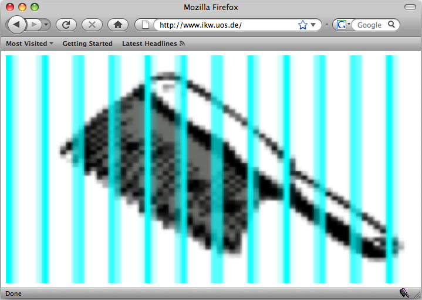
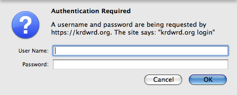

In this section, we will give you information about how to use the tool. If you have not installed it yet, go to krdwrd.org
and get it. Of course, you will need Firefox, too.
Since the add-on depends on a special proxy server to connect to the Internet - you can only grab and submit Web pages from the KrdWrd corpora - it may be a good idea to create a separate profile just for working with the add-on. If you want to create a profile but have no idea how to do that, have a look at the Firefox Support Knowledge Base under Managing Profiles.
The proxy server will deny all requests that are not part of the normal add-on operation. If you ever see something like

it is most likely because you tried to surf the Web with the wrong Firefox profile.
To access the KrdWrd site you will be asked for authentication. Members of the University of Osnabrück can use their RZ Account1, others have to use the credentials that were given to them.2

When you request a page from the corpus for the first time, Firefox will pop-up a security warning. The warning says "you have requested an encrypted page that contains some unencrypted data". The warning is issued because the corpus page are issued unencrypted. Your login credentials are never send to the server unencrypted, there is no reason not to ignore this warning.